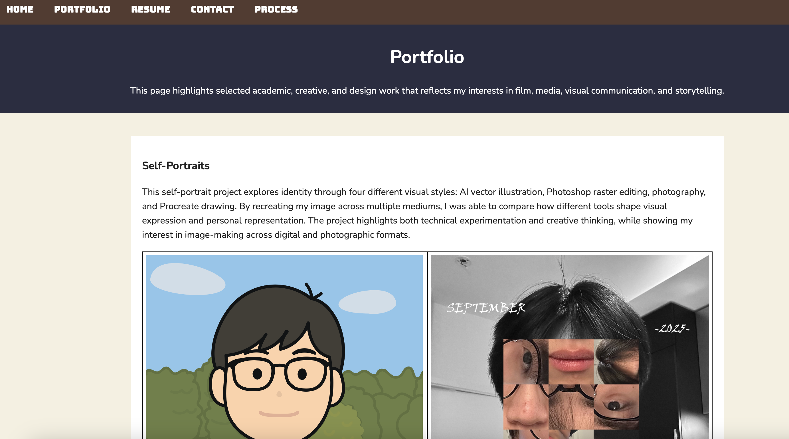
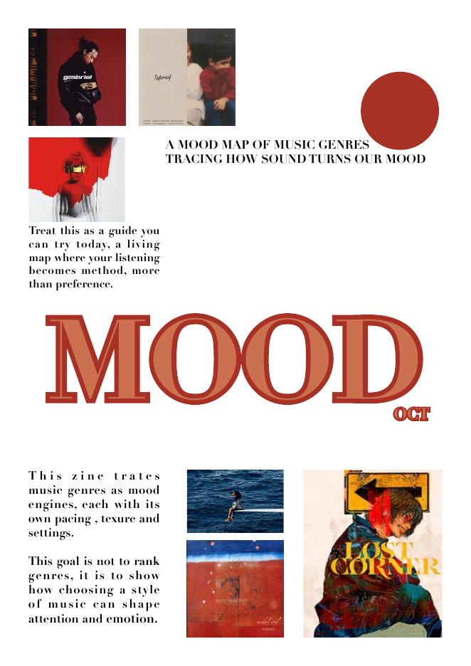

CCT260 - Web design
Digital Resume Website
A five-page personal website designed in Figma and developed with HTML and CSS in Visual Studio Code.
Figma - HTML/CSS
Ask about this projectDesign · Film · Digital Media
I am a fourth-year University of Toronto Mississauga student double-majoring in Communication, Culture, Information & Technology and Cinema Studies. My work explores digital design, editorial media, film culture, and visual communication.
Explore my workPortfolio
Three projects and one featured case study

CCT260 - Web design
A five-page personal website designed in Figma and developed with HTML and CSS in Visual Studio Code.
Figma - HTML/CSS
Ask about this project
CIN317 - Film marketing
A marketing plan and visual lookbook positioning Fruit Chan's film for Toronto university, arthouse, and Hong Kong cinema audiences.
Photoshop · Marketing strategy
View case study
CCT250 - Editorial design
A collaborative digital zine about the relationship between songs, emotions, colour, typography, and editorial rhythm.
InDesign - Editorial layout
Ask about this projectAbout
I am interested in the point where visual design, digital media, technology, and film culture meet.